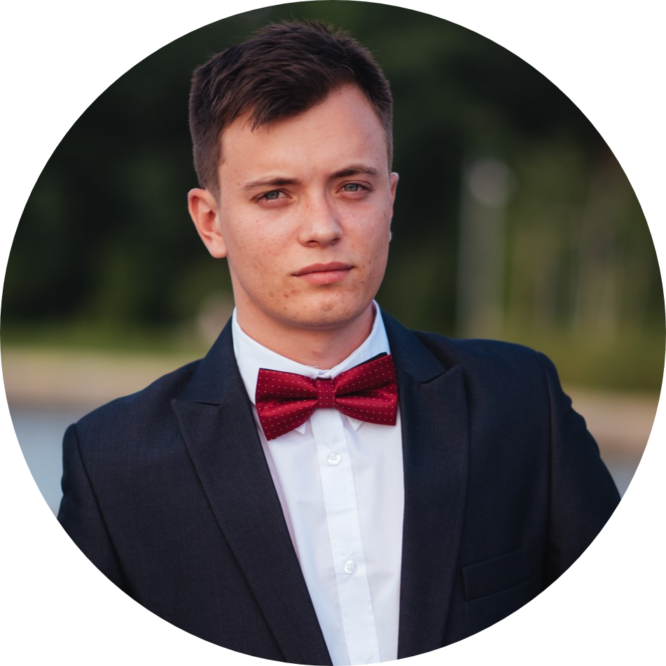

|  | Andrei-Cosmin VlădulescuEngineer and graduate of Faculty of Electronics, Telecomunications and Information Technology, Polytechnic University of Bucharest.I am a 24 years old engineer since July 2019 and I'm currently working at Ericsson as a System Engineer since August 2019. I also study for a master's degree at the same faculty where I graduated. |
| HTML/CSS | ⭐ ⭐ ⭐ ⭐ |
| Python | ⭐ ⭐ ⭐ ⭐ |
| Java/C/C++ | ⭐ ⭐ ⭐ |
| CCNA/Networking | ⭐ ⭐ ⭐ |
| Linux OS | ⭐ ⭐ |